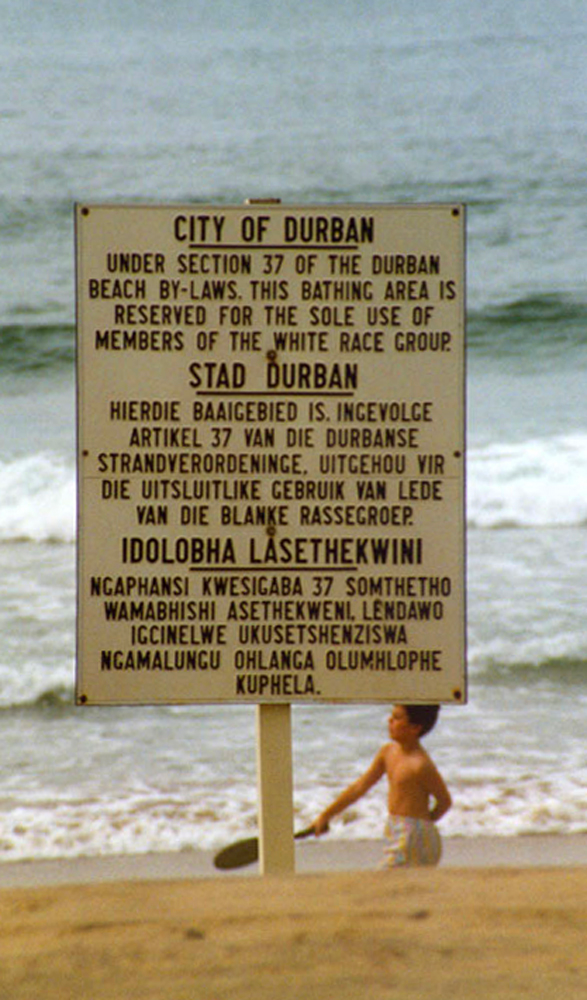

아프리칸스어로 분리, 격리를 뜻한다. 영어로는 아파타이트(/əˈpɑːrt(h)aɪt/ ə-PART-(h)yte)라고 발음한다. 냉전 시기부터 남아공 국민당(National Party) 정권이 실시한 인종차별 정책이다.
백인과 흑인의 격리는 차별과는 별개의 문제라는 논리로 시작했지만 근본은 차별에 기인한다. 말만 격리지 유색인을 위한 시설은 백인의 것들보다 항상 열악했다. 이 정책은 1960년대부터 1980년대까지 이어졌고, 이로 인해 국제사회로부터 철저히 배척받았다.
앙골라 내전(1975년) 당시 미국과 중국이 비난 받았던 이유는 침공이나 대학살이 아닌 남아공과의 협력 자체였다. 물론 앙골라 해방인민운동 뒤에 있는 소련에 대한 대리전으로서 참전한 것이지만.